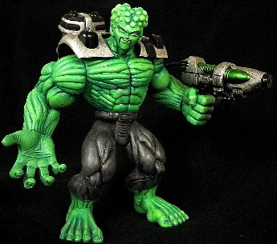
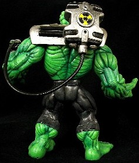
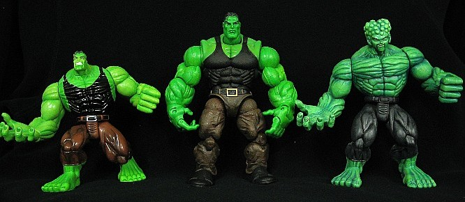

|
I'm not sure if this version of the Leader ever appeared in the comics, but he did make an appearance in the Hulk cartoon and even had a Toy Biz action figure. This is my take on the character, assuming he had managed to induce gamma-powered musculature upon himself. Of course, since he is still the Leader, he would not faced Bruce empty-handed, even with his newly acquired superhuman strength. Thus, I gave him a gamma goo shooter.


This custom is made from a Smart Hulk I figure, with the legs straightened out. The head (face) is from some Dragonball Z figure. The head cleavage and bumps were sculpted. The paint app is a mixture of airbrushing and drybrushing. The gun is a repainted Abomination I gun attached to the Smart Hulk I shoulder armor.
As far as general customizing tricks go, this is a pretty good example of changing the effective scale of a figure. By straightening the legs and adding a larger head, the apparent scale of the figure has changed from 5.5" to 6", as shown in the picture below. The custom fits in much better with the new 6" scale Hulk Classics figures than the Smart Hulk figure on the left.

|